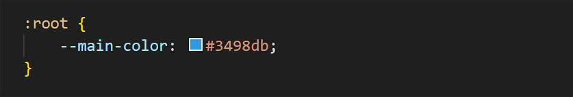
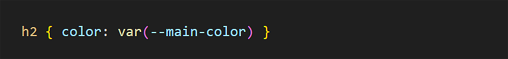
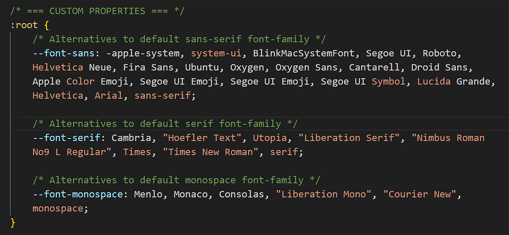
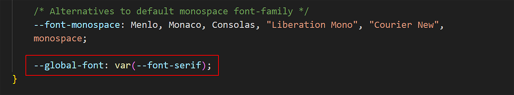
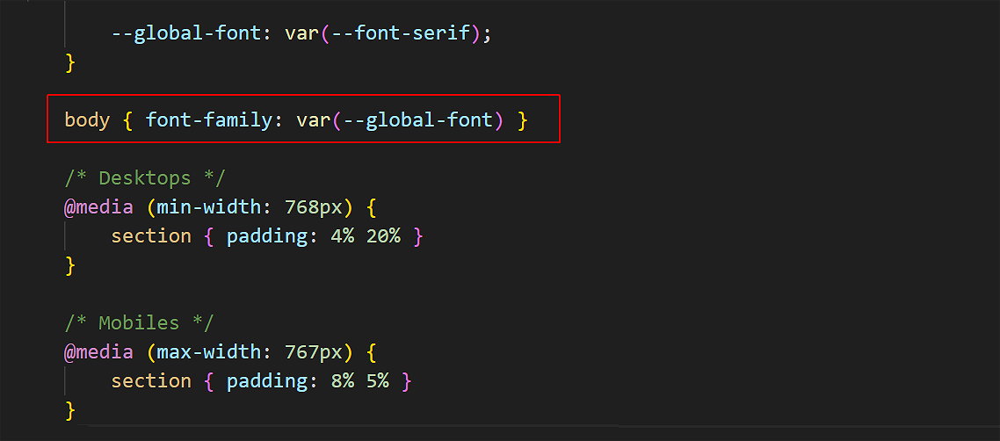
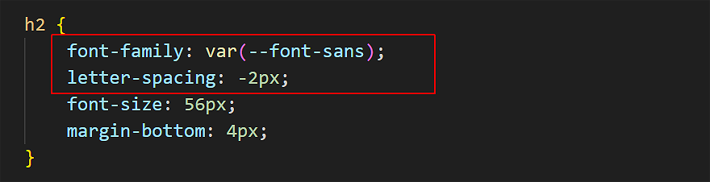
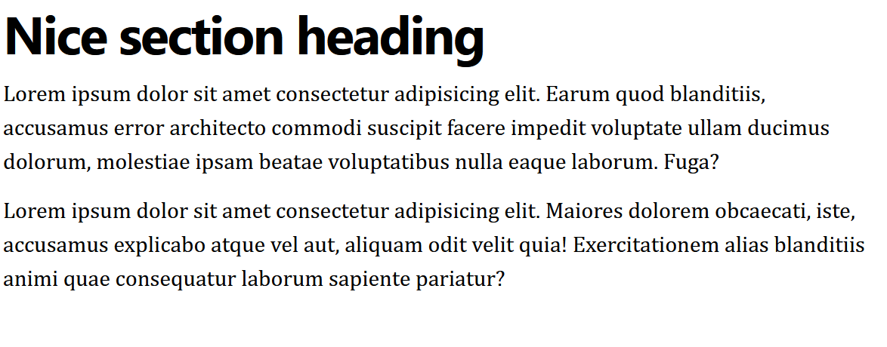
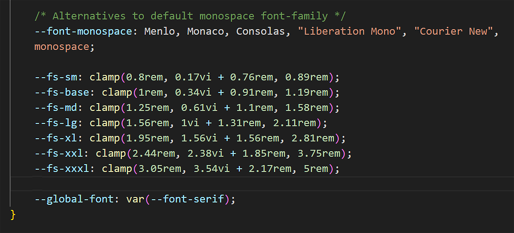
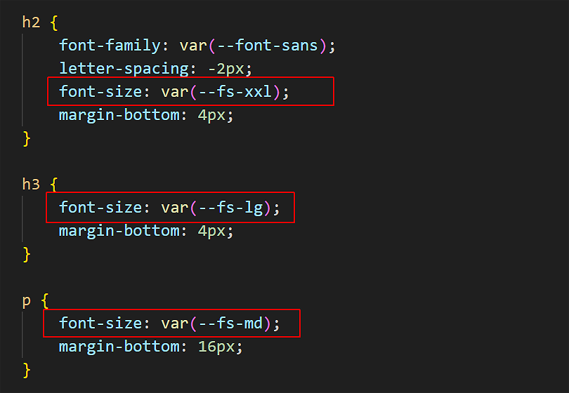

Learning Goals
At the end of this Tutorial, you will be able to:
- Recognise the most commonly used CSS text properties in frontend development:
font-family
font-size
font-weight
font-style
text-align
letter-spacing - Using system fonts from the font-stack with CSS custom properties.
- Applying a fluid typographic scale to adjust font sizes in a web page responsively according to the viewport width.
Styling with font-family
The two basic values of the font-family property in CSS are serif and sans-serif.
- Serifs are the small lines or ‘squiggles’ at the ends of letter, numbers and other characters.
- Sans-serif fonts do not have these serifs (‘Sans’ is French for ‘without’.)

By default, web browsers all text in a serif font.
/* These two style rules make no difference.
Both h2 and h3 sub-headings are already serif by default. */
h2 ( font-family: serif }
h3 ( font-family: serif }
/* This style rule does make a difference. */
p ( font-family: sans-serif }
For printed documents, such as books, newspapers, magazines and so on...
- Serif fonts are generally used for long paragraphs of text. This is because the serifs help the human eye to recognise whole words rather than sequences of individual letters.
- For headings and short blocks of text, either serif or sans-serif fonts are equally appropriate choices.
In web pages, however, there is no evidence that paragraphs of text are more readable in serif fonts. So you will see fonts of either the serif or sans-serif family used for various elements of web pages.
Styling with font-size
As its name suggests, the font-size property sets the size of text in headings and paragraphs.
In web design, font sizes can be measured in different units. The simplest of these is px, which is short for pixels.
Here are the default values of font-size for headings and paragraphs used by most web browsers.
/* Default values for font-sizes in most web browsers. */
h1 ( font-size: 32px }
h2 ( font-size: 24px }
h3 ( font-size: 18px }
p ( font-size: 16px }
Particularly for <h1> and <h2> headings, the font-size values you choose will depend on the number of characters in the heading. See the examples below.

In modern web design, font size is typically set using a responsive scale that changes according to the width of the viewport.
Styling with font-weight
The two basic values of font-weight are normal and bold. By default, web browsers display paragraphs in normal weight and all headings and sub-headings in bold.
/* This does make a difference. Headings are bold by default. */
h2 ( font-weight: normal }
/* This makes no difference. Paragraphs are normal by default. */
p ( font-weight: normal }
As you learnt in the previous Working with HTML Tutorial, you can make one or a few words in an element bold with the <b> ... </b> tag pair in HTML.

To make entire heading or text paragraph bold, however, use the font-weight: bold property and value pair in CSS.
Styling with font-style
The two basic values of font-style are normal and italic. By default, web browsers display all headings, sub-headings and text paragraphs in the normal font-style.
/* These make no difference. Both are already normal by default. */
h2 ( font-style: normal }
p ( font-style: normal }
As you learnt in the previous Working with HTML Tutorial, you can make one or a few words in an element italic with the <i> ... </i> tag pair in HTML.

To make entire heading or text paragraph bold, however, use the font-style: italic property and value pair in CSS. The two examples below are from Lou Levits.

Styling with text-align
In Microsoft Word or other word processors, you are typically offered four choices for aligning both headings and text paragraphs: Left, Centered, Right and Justified.

In CSS, the equivalent alignment values are:
text-align: left; /* Default value */
text-align: center;
text-align: right;
text-align: justify; /* Not recommended */
Below are examples of the left, center and right values of the text-align property in CSS.

The justify value of text-align is not recommended because web browsers do not distribute spacing between characters and words proportionally.
Styling with letter-spacing
The letter-spacing property sets the spacing between text characters within a heading, sub-heading or paragraph. Like the font-size property, you can set letter-spacing in px units.
- To reduce the letter-spacing, use a negative value. For example:
h1 ( /* This REDUCES the letter-spacing. */ letter-spacing: -2px }
- To increase the letter-spacing, use a positive value. For example:
h2 ( /* This INCREASES the letter-spacing. */ letter-spacing: 6px }
In web pages, reduced or increased letter-spacing is often used in headings for visual effect. In text paragraphs, however, web designers typically use default letter spacing.
You will commonly see letter spacing effects applied in brand logos to achieve a distinctive appearance. See the examples below.

About CSS custom properties
CSS custom properties (also known as CSS variables) let you store values at the top of your CSS file and then reuse them throughout your CSS. They make your CSS styles more organised, flexible, and easier to update.
Typically, you:
- Place CSS custom properties after the == WEB BROWSER RESETS == in a CSS file, and
- Write them inside a so-called :root { } selector.
CSS custom properties are most commonly used for font-families, fluid font-sizes, and colours.
CSS custom properties are created using two dashes -- followed by a name, and then a value. For example:
To use a custom property later in your CSS file, you would enter a style rule with the var( ) function such as the following:
CSS custom properties and the system font stack
Modern frontends typically make use of the system font stack to display text in the most visually appealing way. The easiest way to use these fonts is to specify a generic font-family name as a custom property in your CSS.
Follow these steps.
- In VS Code, open and display your style-3.css stylesheet.
- Click after the == WEB BROWSER RESETS == and press the Enter key a few times to open up some space.
- Copy and paste the following empty CSS custom properties container { } into your stylesheet.
/* === CUSTOM PROPERTIES === */ :root { } - Inside the CSS custom properties container { }, copy-and-paste the following:
/* Alternatives to default sans-serif font-family */ --font-sans: -apple-system, system-ui, BlinkMacSystemFont, Segoe UI, Roboto, Helvetica Neue, Fira Sans, Ubuntu, Oxygen, Oxygen Sans, Cantarell, Droid Sans, Apple Color Emoji, Segoe UI Emoji, Segoe UI Emoji, Segoe UI Symbol, Lucida Grande, Helvetica, Arial, sans-serif; /* Alternatives to default serif font-family */ --font-serif: Cambria, "Hoefler Text", Utopia, "Liberation Serif", "Nimbus Roman No9 L Regular", Times, "Times New Roman", serif; /* Alternatives to default monospace font font-family */ --font-monospace: Menlo, Monaco, Consolas, "Liberation Mono", "Courier New", monospace; - Use the Tab key to indent all the lines inside the { }. Your CSS file should now look as follows. 
- Typically, every web page on a website will mostly (or even entirely) use one font-family. At the end of your custom properties list, create a new one as follows to define the main font-family to be used by web pages linked to this CSS file. 
- Next, assign this new CSS custom property to the body { } selector in your CSS file as shown below. 
- When you save your style-3.css file, you can see that, on a Windows PC, the text is now displayed differently.

- Let's update the h2 { } selector with a different font-family. Also, add a negative letter-spacing value. 
- When you save your style-3.css stylesheet, each of the six <section> blocks of content in your web page should now look similar to the following. 
About fluid typography
Fluid typography means that the font sizes of text – headings, paragraphs, bulleted lists, menu items – on a web page ‘scale’ (shrink or expand) smoothly according to the width of the user’s device viewport.
Here are some examples of web pages that did not use fluid typography to scale font sizes correctly for mobile phone screens.

The animated gif below is taken from an article on the CSS Tricks website that features the widely-used implementation of the fluid typography approach developed by Australian web designer Mike Riethmuller.

The modern approach is to use the CSS clamp() function and include the range preset values as custom properties in your stylesheets.
You can then include the preset values as custom properties in your stylesheets. See the example below.
Adding custom properties for fluid type sizes
Follow these steps.
- Go to the Fluid Type Scale Calculator website.
- Copy the preset font scale at the right of the screen.
- In VS Code, open your style-3.css stylesheet and paste in the copied responsive type scale. Typically, these CSS custom properties are located just after the system font stack custom properties. 
- Scroll down to h2 {}, h3 {} and p {} selectors that contain the fixed font size: values, and update them with fluid values as shown below. 
When finished, save your style-3.css stylesheet and display the web page at different screen sizes.
Uploading your work to Github
You are now ready to upload your work to your account on Github.
- Open a new tab in your web browser and go to Github.com. If you are not already signed in to your Github account, sign in now.

- On your Github home page, click the name of the repository (‘repo’) that holds your web pages. Its name will look as follows, where username is your chosen username on Github.
username.github.io

- On the next Github screen displayed, near the right of the screen, you can see a button named Add file. Click on it.

- From the dropdown list displayed, choose the option Upload files.

- In File Explorer (Windows) or Finder (Apple Mac), drag-and-drop your index.html file and your 📁 assets and 📁 exercises sub-folders to upload them to your repository on Github.

- Scroll down to the bottom of the Github screen, and accept or edit the short message (Add files via upload) in the Commit changes box.
- Finally, click the green Commit changes button to upload your entire exercises sub-folder and all the files it contains.
Your web pages are now published on Github at a web address similar to the following, where username is the username you have chosen for your Github account:
https://username.github.io/exercises/page-3.html
It may take a few minutes for your uploaded files to appear on Github.